CU-01: Abrir y cerrar el asistente
VERIFICADO
Metodo: UI real, teclado y movil emulado
2026-11-05T14:43:37.909Z - 2026-11-05T14:43:45.481Z | Registro original | Respuestas generativas registradas: 0
 cerrado | 2026-11-05T14:43:44.028Z | CU-01-01-cerrado.png
cerrado | 2026-11-05T14:43:44.028Z | CU-01-01-cerrado.png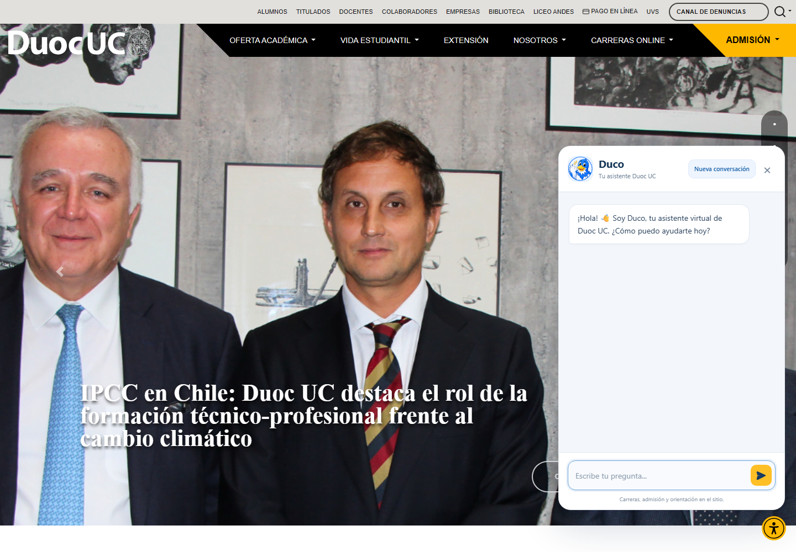
abierto | 2026-11-05T14:43:44.851Z | CU-01-02-abierto.png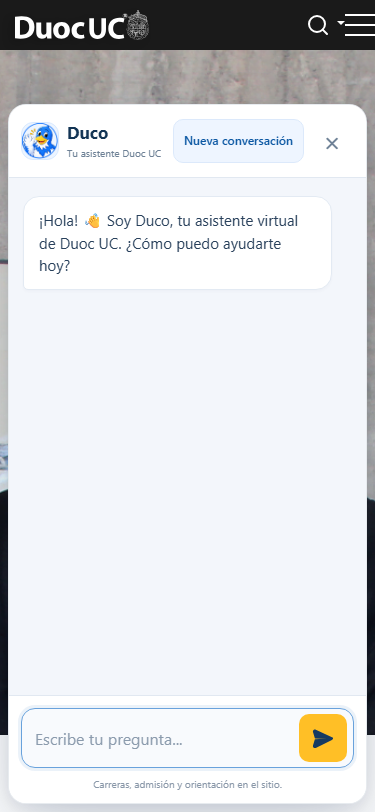
movil-abierto | 2026-11-05T14:43:45.481Z | CU-01-03-movil-abierto.pngEscenario adicional: Consulta vacia no enviada
VERIFICADO. UI o motor real; sin servicio de IA generativa
Resultado tecnico
{
"messages": 0,
"processing": false
}CU-02: Consultar informacion institucional
VERIFICADO
Metodo: Consulta por UI y servicio de IA real
2026-11-05T14:43:45.496Z - 2026-11-05T14:44:07.465Z | Registro original | Respuestas generativas registradas: 2
Solicitud: Que es Duoc UC? Solo explicamelo, no navegues.
Duoc UC es una institución educativa chilena que forma especialistas capaces de adaptarse al mundo laboral actual. Ofrece carreras técnicas y profesionales diseñadas para responder a las necesidades del mercado, con un enfoque práctico y flexible.
antes | 2026-11-05T14:43:48.172Z | CU-02-01-antes.pngrespuesta | 2026-11-05T14:44:07.464Z | CU-02-02-respuesta.pngCU-03: Buscar y filtrar carreras
VERIFICADO
Metodo: Buscador institucional real; no clasificacion IA
2026-11-05T14:44:07.469Z - 2026-11-05T14:44:10.831Z | Registro original | Respuestas generativas registradas: 0
Carrera Profesional
Ingeniería en Recursos Naturales y Sostenibilidad
Duración: 8 semestres
Ver Carrera
Carrera Profesional
Ingeniería en Control de Gestión
Duración: 18 bimestres
100% Online
Ver Carrera
Carrera Técnica
Técnico Modelador Proyectista
Duración: 5 semestres
Ver Carrera
Carrera Profesional
Ingeniería en Minas
Duración: 18 bimestres
100% Online
Ver Carrera
Carrera Técnica
Técnico en Laboratorio Clínico, Banco de Sangre e Imagenología
Duración: 5 semestres
Ver Carrera
Carrera Profesional
Ingeniería en Administración de Seguridad Privada
Duración: 18 bimestres
100% Online
Ver Carrera
Carrera Técnica
Técnico en Desabolladura y Pintura Automotriz
Duración: 5 semestres
Ver Carrera
Carrera Profesional
Ingeniería en Informática
Duración: 8 semestres
Ver Carrera
Carrera Profesional
Ingeniería en Ciberseguridad
Duración: 8 bimestres
100% Online
Ver Carrera
Carrera Profesional
Ingeniería en Ciencia de Datos
Duración: 8 bimestres
100% Online
Ver Carrera
Carrera Técnica
Técnico Audiovisual
Duración: 5 semestres
Ver Carrera
Carrera Profesional
Administración en Turismo y Hospitalidad
Duración: 8 semestres
Ver Carrera
Carrera Profesional
Ingeniería en Marketing Digital
Duración: 8 semestres (Presencial) / 16 bimestres (Online)
Ver Carrera
Carrera Técnica
Técnico en Electricidad y Automatización Industrial
Duración: 5 semestres
Ver Carrera
Carrera Técnica
Técnico en Mantenimiento Industrial
Duración: 5 semestres
Ver Carrera
Carrera Profesional
Auditoría y Análisis de Negocios
Duración: 18 bimestres
100% Online
Ver Carrera
Carrera Técnica
Técnico en Turismo y Hospitalidad
Duración: 4 Semestres
Ver Carrera
Carrera Técnica
Técnico en Trabajo Social
Duración: 10 bimestres
100% Online
Ver Carrera
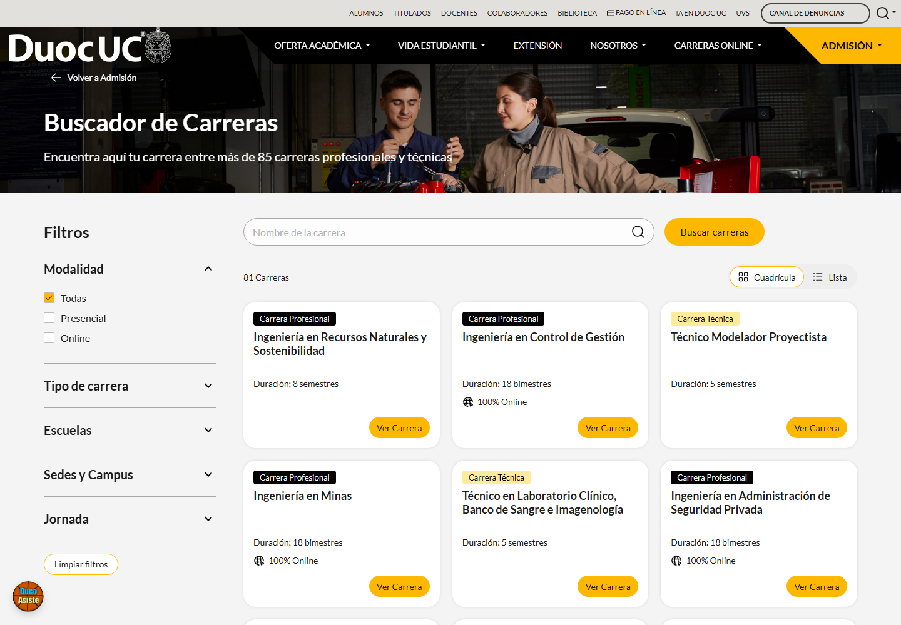
catalogo | 2026-11-05T14:44:10.244Z | CU-03-01-catalogo.png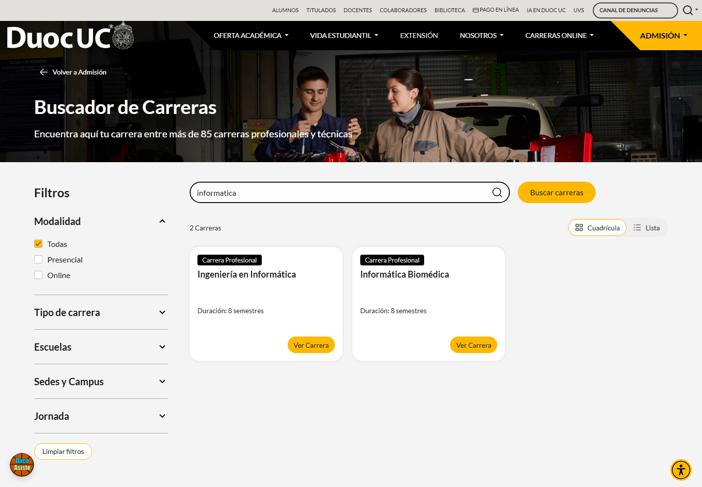
filtro-informatica | 2026-11-05T14:44:10.830Z | CU-03-02-filtro-informatica.pngEscenario adicional: Buscador sin coincidencias
VERIFICADO. UI o motor real; sin servicio de IA generativa
Resultado tecnico
{
"visible": "No se encontraron carreras"
}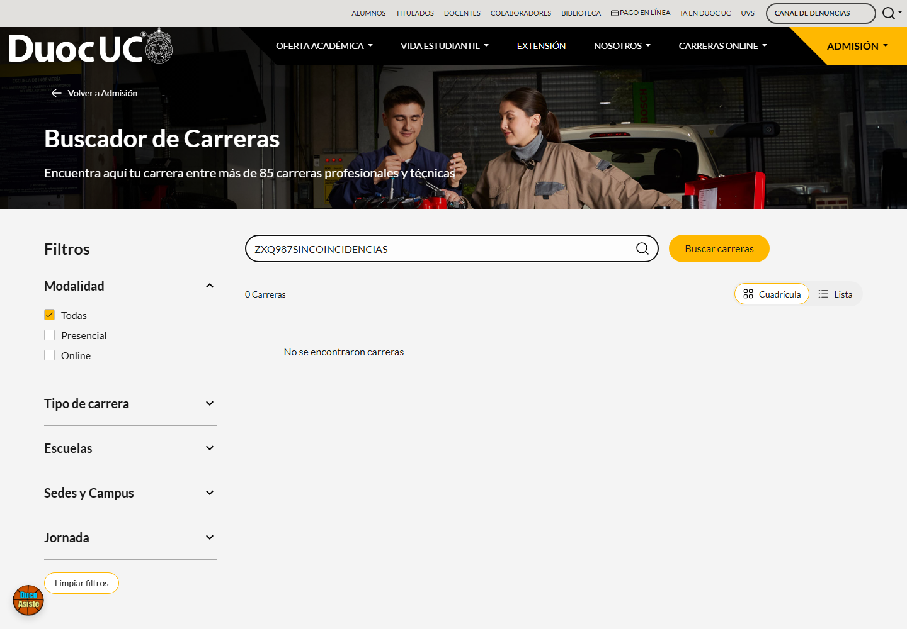
Buscador sin coincidencias | CU-03-extra-buscador-sin-coincidencias.pngCU-04: Consultar la ficha de una carrera
VERIFICADO
Metodo: Ficha local y consulta estructurada por UI
2026-11-05T14:44:10.835Z - 2026-11-05T14:44:16.730Z | Registro original | Respuestas generativas registradas: 0
Solicitud: Cuanto dura Ingenieria en Informatica?
Ingeniería en Informática
Duración: 8 semestres.
Fuente: https://www.duoc.cl/carreras/ingenieria-en-informatica/
Catálogo de referencia: 2026-10-29. No implica información en tiempo real.
ficha | 2026-11-05T14:44:14.753Z | CU-04-01-ficha.pngdatos-carrera | 2026-11-05T14:44:16.730Z | CU-04-02-datos-carrera.pngCU-05: Solicitar una explicacion de una carrera
VERIFICADO
Metodo: Motor de explicacion guiada con Ollama real; no clasificacion de la solicitud
2026-11-05T14:44:16.740Z - 2026-11-05T14:45:08.810Z | Registro original | Respuestas generativas registradas: 1
Partes capturadas: 1, 2, 3, 4
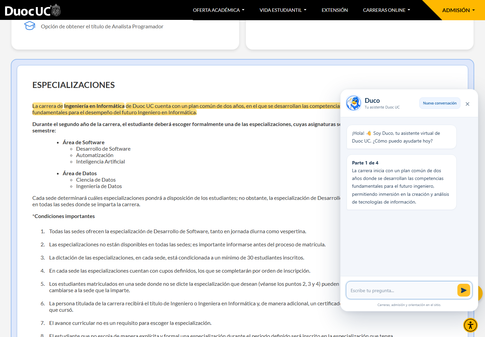
parte-1 | 2026-11-05T14:44:42.806Z | CU-05-01-parte-1.png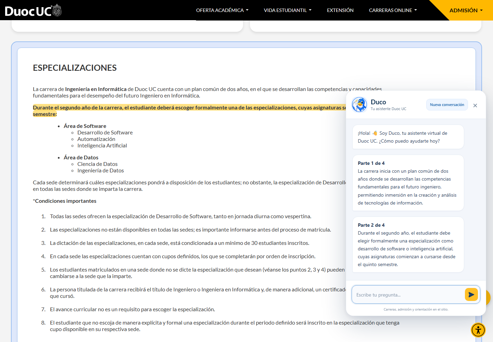
parte-2 | 2026-11-05T14:44:49.229Z | CU-05-02-parte-2.png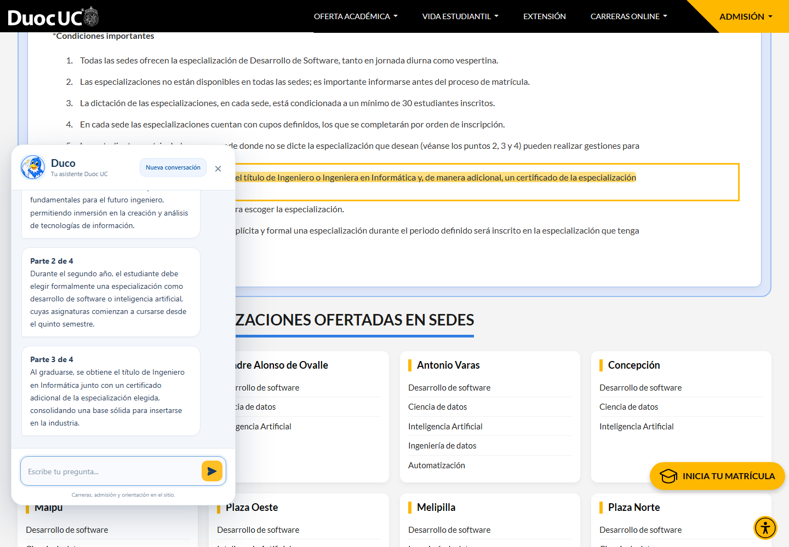
parte-3 | 2026-11-05T14:44:55.877Z | CU-05-03-parte-3.pngparte-4 | 2026-11-05T14:45:03.134Z | CU-05-04-parte-4.png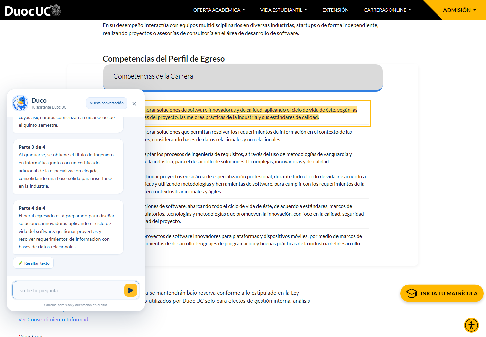
explicacion-completa | 2026-11-05T14:45:08.810Z | CU-05-05-explicacion-completa.pngCU-06: Navegar a otra pagina mediante Duco
VERIFICADO
Metodo: Solicitud por UI, ruta real y continuidad de sesion
2026-11-05T14:45:08.820Z - 2026-11-05T14:45:16.075Z | Registro original | Respuestas generativas registradas: 0
Solicitud: Llevame a Ingenieria en Informatica
solicitud | 2026-11-05T14:45:11.506Z | CU-06-01-solicitud.pngdestino | 2026-11-05T14:45:16.075Z | CU-06-02-destino.pngCU-07: Localizar una seccion mediante desplazamiento
FALLO
Metodo: Integracion motor de desplazamiento sobre contenido real
2026-11-05T14:45:16.082Z - 2026-11-05T14:45:19.558Z | Registro original | Respuestas generativas registradas: 0
Fallo conservado
AssertionError [ERR_ASSERTION]: The expression evaluated to a falsy value:
assert(outcome.success)
at C:\Users\elias\OneDrive\Escritorio\Proyecto capstone\tests\use-case-evidence.cjs:160:81
at async check (C:\Users\elias\OneDrive\Escritorio\Proyecto capstone\tests\use-case-evidence.cjs:76:5)
at async C:\Users\elias\OneDrive\Escritorio\Proyecto capstone\tests\use-case-evidence.cjs:157:5 antes-scroll | 2026-11-05T14:45:18.829Z | CU-07-01-antes-scroll.png
antes-scroll | 2026-11-05T14:45:18.829Z | CU-07-01-antes-scroll.png estado-del-fallo | 2026-11-05T14:45:19.558Z | CU-07-02-estado-del-fallo.png
estado-del-fallo | 2026-11-05T14:45:19.558Z | CU-07-02-estado-del-fallo.pngEscenario adicional: Desplazamiento a encabezado del contenido
FALLO. UI o motor real; sin servicio de IA generativa
Resultado tecnico
"page.evaluate: Error: No se encontro el encabezado real esperado\n at eval (eval at evaluate (:311:30), <anonymous>:3:28)\n at UtilityScript.evaluate (<anonymous>:313:16)\n at UtilityScript.<anonymous> (<anonymous>:1:44)\n at p.evaluate.duco.runAssistantFlow.action.type (C:\\Users\\elias\\OneDrive\\Escritorio\\Proyecto capstone\\tests\\use-case-extra-evidence.cjs:24:18)\n at async C:\\Users\\elias\\OneDrive\\Escritorio\\Proyecto capstone\\tests\\use-case-extra-evidence.cjs:60:18"
Escenario adicional: Desplazamiento a Admision Duoc UC
VERIFICADO. UI o motor real; sin servicio de IA generativa
Resultado tecnico
{
"outcome": {
"success": true,
"detail": "Se desplazó la página al elemento"
},
"before": 0,
"after": 1151,
"target": "Admisión Duoc UC"
}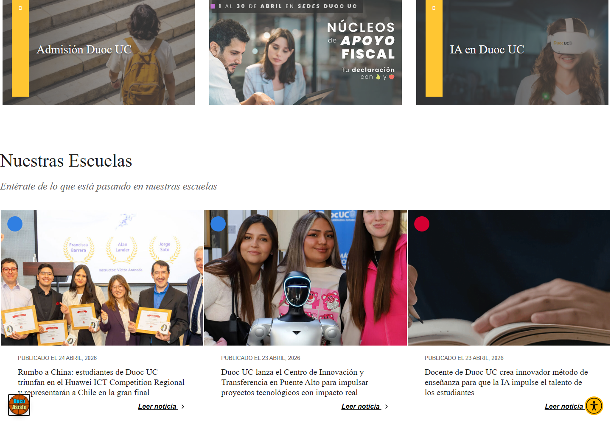
Desplazamiento a Admision Duoc UC | CU-07-extra-desplazamiento-a-admision-duoc-uc.pngCU-08: Resaltar un texto o elemento
VERIFICADO
Metodo: Integracion motor de resaltado; carrusel real
2026-11-05T14:45:19.561Z - 2026-11-05T14:45:23.248Z | Registro original | Respuestas generativas registradas: 0
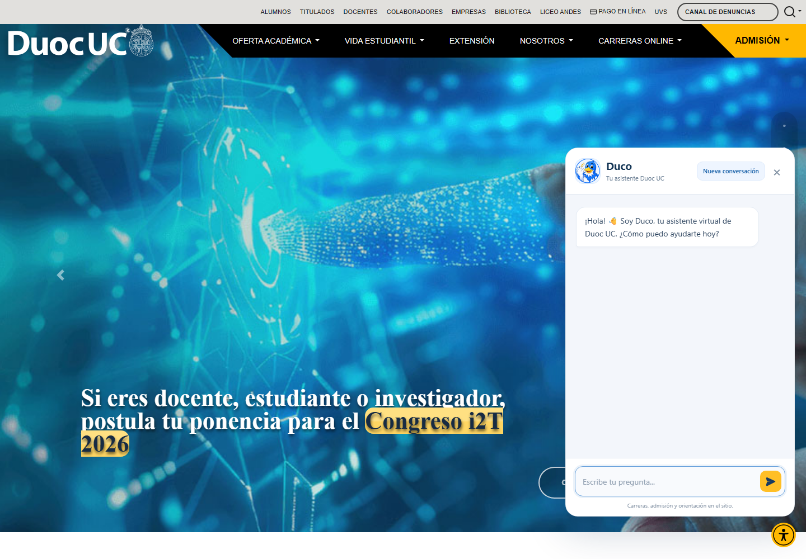
texto-resaltado | 2026-11-05T14:45:22.551Z | CU-08-01-texto-resaltado.png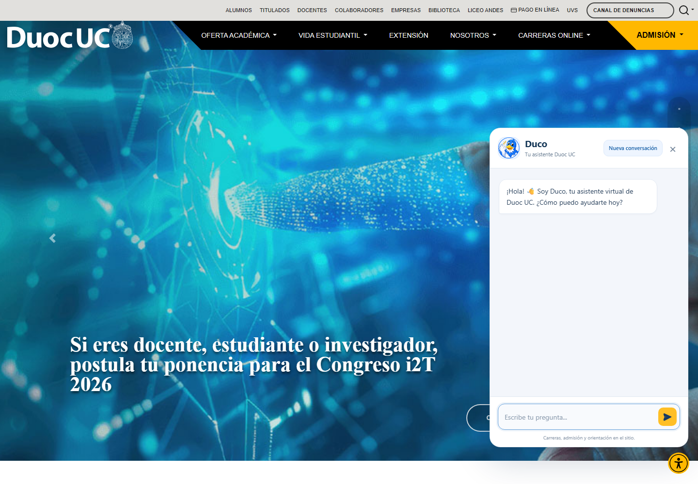
resaltado-limpiado | 2026-11-05T14:45:23.248Z | CU-08-02-resaltado-limpiado.pngEscenario adicional: Contenido inexistente no se informa como resaltado
VERIFICADO. UI o motor real; sin servicio de IA generativa
Resultado tecnico
{
"outcomes": [
{
"success": false,
"detail": "No se encontró contenido visible que coincidiera con el objetivo"
}
],
"text": "¡Hola! 👋 Soy Duco, tu asistente virtual de Duoc UC. ¿Cómo puedo ayudarte hoy?\n🖍️ Resaltando: ZXQ987NOEXISTE\nNo pude completar este paso: No se encontró contenido visible que coincidiera con el objetivo."
}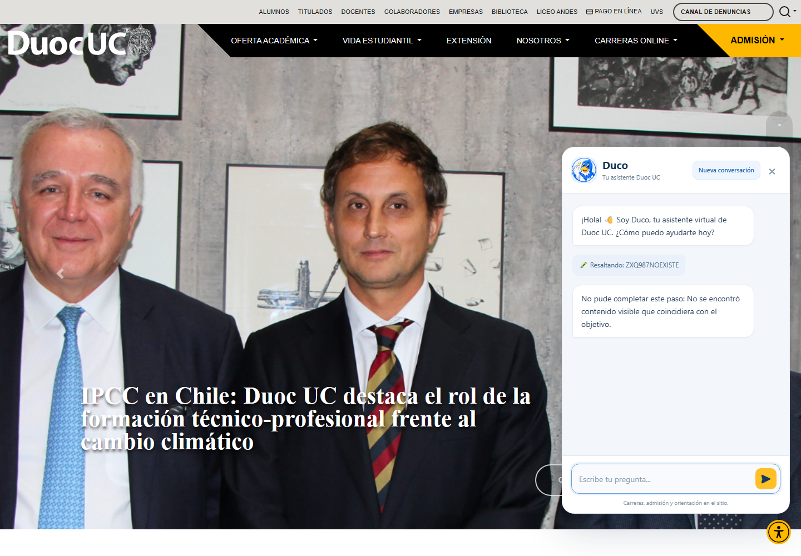
Contenido inexistente no se informa como resaltado | CU-08-extra-contenido-inexistente-no-se-informa-como-resaltado.pngCU-09: Mostrar el respaldo de una explicacion
VERIFICADO
Metodo: Reutiliza parrafos obtenidos realmente en CU-05; motor de evidencia
2026-11-05T14:45:23.253Z - 2026-11-05T14:45:28.626Z | Registro original | Respuestas generativas registradas: 0
La carrera de Ingeniería en Informática de Duoc UC cuenta con un plan común de dos años, en el que se desarrollan las competencias y capacidades fundamentales para el desempeño del futuro Ingeniero en Informática.
Durante el segundo año de la carrera, el estudiante deberá escoger formalmente una de las especializaciones, cuyas asignaturas se cursan a partir del 5.º semestre:
La persona titulada de la carrera recibirá el título de Ingeniero o Ingeniera en Informática y, de manera adicional, un certificado de la especialización que cursó.
Diseñar y generar soluciones de software innovadoras y de calidad, aplicando el ciclo de vida de éste, según las características del proyecto, las mejores prácticas de la industria y sus estándares de calidad.
 antes | 2026-11-05T14:45:26.590Z | CU-09-01-antes.png
antes | 2026-11-05T14:45:26.590Z | CU-09-01-antes.png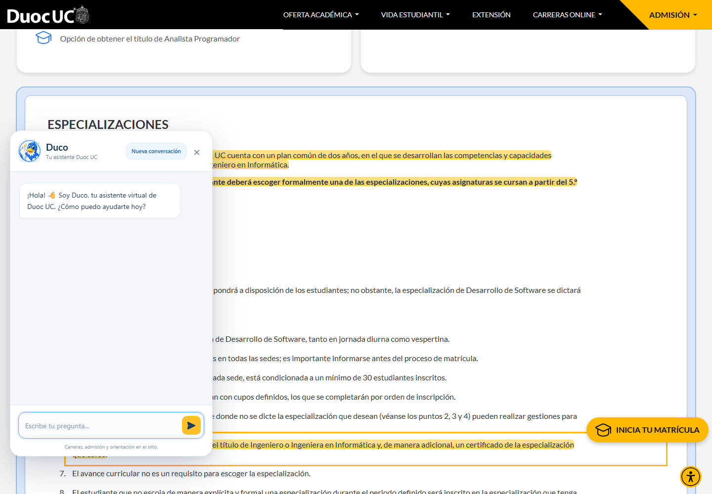
parrafos-fuente | 2026-11-05T14:45:28.626Z | CU-09-02-parrafos-fuente.pngEscenario adicional: Parrafo fuente sin el chat encima
VERIFICADO. UI o motor real; sin servicio de IA generativa
Resultado tecnico
{
"outcome": {
"success": true,
"detail": "Se destacaron los textos de la ficha"
},
"source": "Conviértete en una pieza clave para el futuro del desarrollo de sistemas computacionales, estudia la carrera de Ingeniería en Informática de Duoc UC y podrás estar inmerso en la creación, integración, levantamiento y análisis de diferentes tecnologías de información y soluciones tecnológicas."
}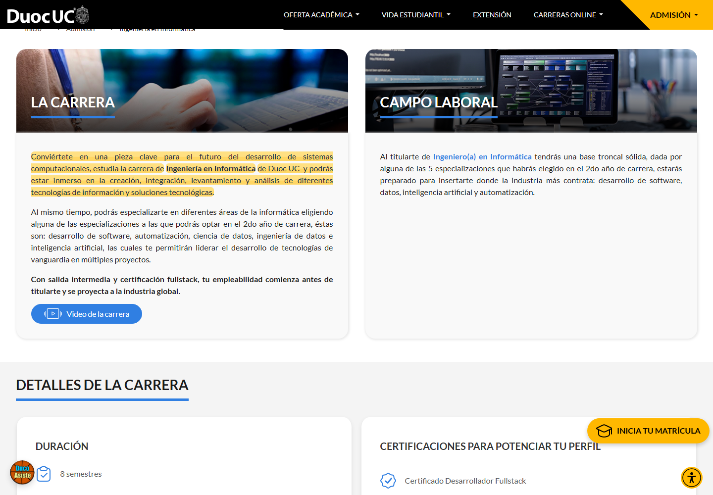
Parrafo fuente sin el chat encima | CU-09-extra-parrafo-fuente-sin-el-chat-encima.pngCU-10: Abrir un menu del sitio
VERIFICADO
Metodo: Integracion motor de menus con DOM real
2026-11-05T14:45:28.633Z - 2026-11-05T14:45:32.529Z | Registro original | Respuestas generativas registradas: 0
 menu-cerrado | 2026-11-05T14:45:31.287Z | CU-10-01-menu-cerrado.png
menu-cerrado | 2026-11-05T14:45:31.287Z | CU-10-01-menu-cerrado.png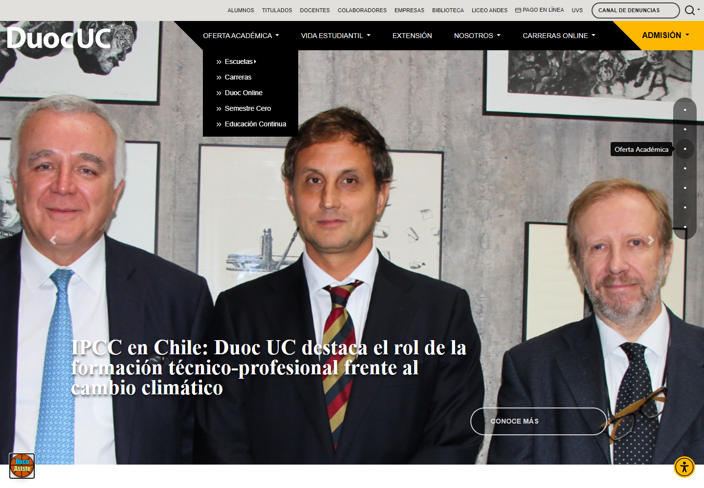
menu-abierto | 2026-11-05T14:45:32.529Z | CU-10-02-menu-abierto.pngCU-11: Cerrar menus abiertos por la guia
VERIFICADO
Metodo: Integracion apertura y cierre explicito; no temporizador automatico
2026-11-05T14:45:32.533Z - 2026-11-05T14:45:36.768Z | Registro original | Respuestas generativas registradas: 0
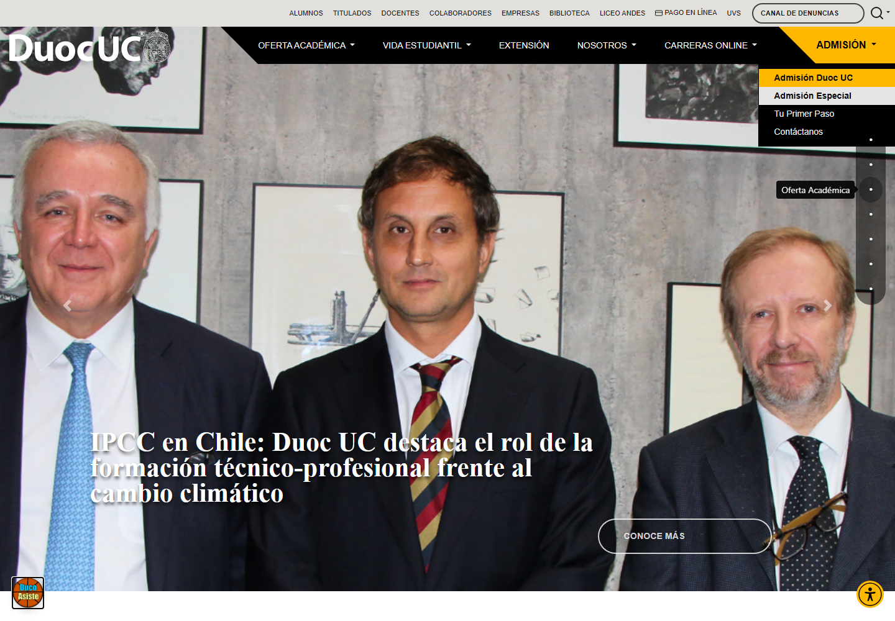
abierto | 2026-11-05T14:45:35.962Z | CU-11-01-abierto.png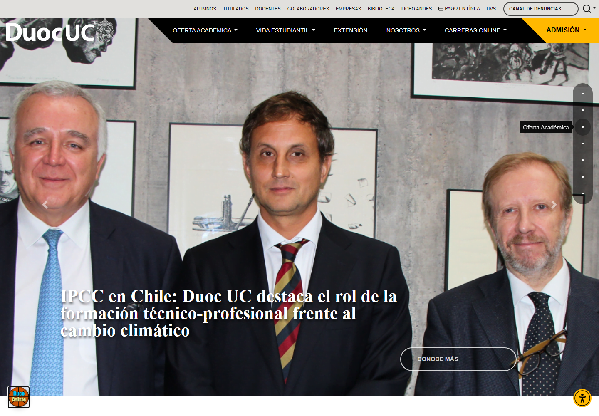
cerrado | 2026-11-05T14:45:36.768Z | CU-11-02-cerrado.pngEscenario adicional: Cierre automatico tras respuesta con menu
VERIFICADO. Plan de IA simulado; temporizador y ciclo UI reales
Resultado tecnico
{
"opened": 1,
"remaining": 0,
"model": "Plan controlado, no es una respuesta generada por IA"
}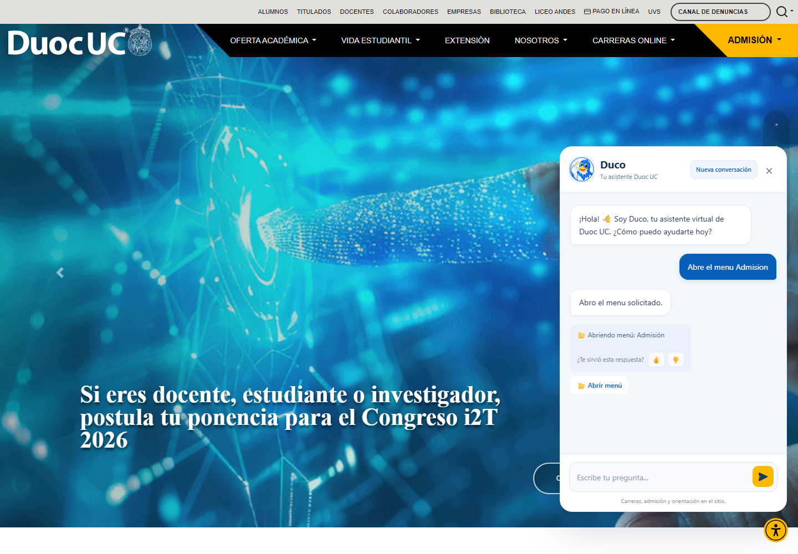
Cierre automatico tras respuesta con menu | CU-11-extra-cierre-automatico-tras-respuesta-con-menu.pngCU-12: Seleccionar una pestana de la ficha
VERIFICADO
Metodo: Integracion control real de pestanas
2026-11-05T14:45:36.772Z - 2026-11-05T14:45:42.699Z | Registro original | Respuestas generativas registradas: 0
{"className":"nav-link ml-3 menu-ficha-carrera-admi duco-control-highlight duco-control-anchor active","ariaSelected":"true"} antes | 2026-11-05T14:45:40.241Z | CU-12-01-antes.png
antes | 2026-11-05T14:45:40.241Z | CU-12-01-antes.png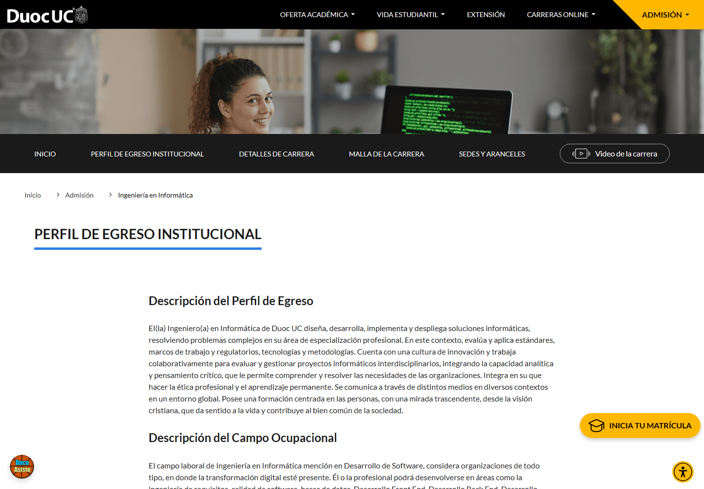
perfil-seleccionado | 2026-11-05T14:45:42.699Z | CU-12-02-perfil-seleccionado.pngCU-13: Abrir contenido multimedia de una carrera
VERIFICADO
Metodo: Apertura y cierre del dialogo real; no certifica reproduccion
2026-11-05T14:45:42.709Z - 2026-11-05T14:45:48.703Z | Registro original | Respuestas generativas registradas: 0
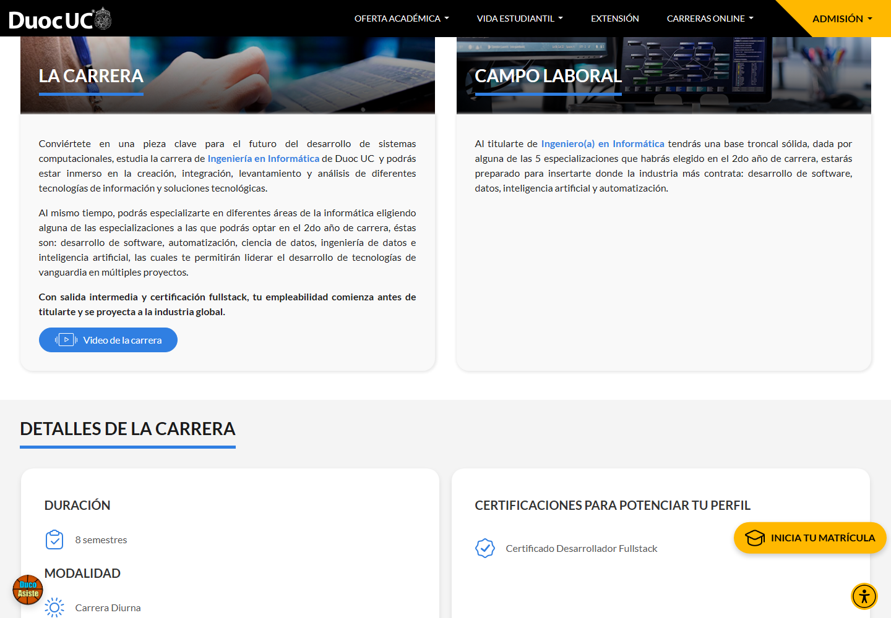
boton-video | 2026-11-05T14:45:45.977Z | CU-13-01-boton-video.png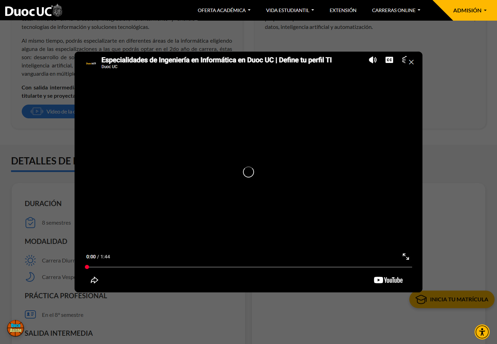
reproductor-abierto | 2026-11-05T14:45:48.136Z | CU-13-02-reproductor-abierto.png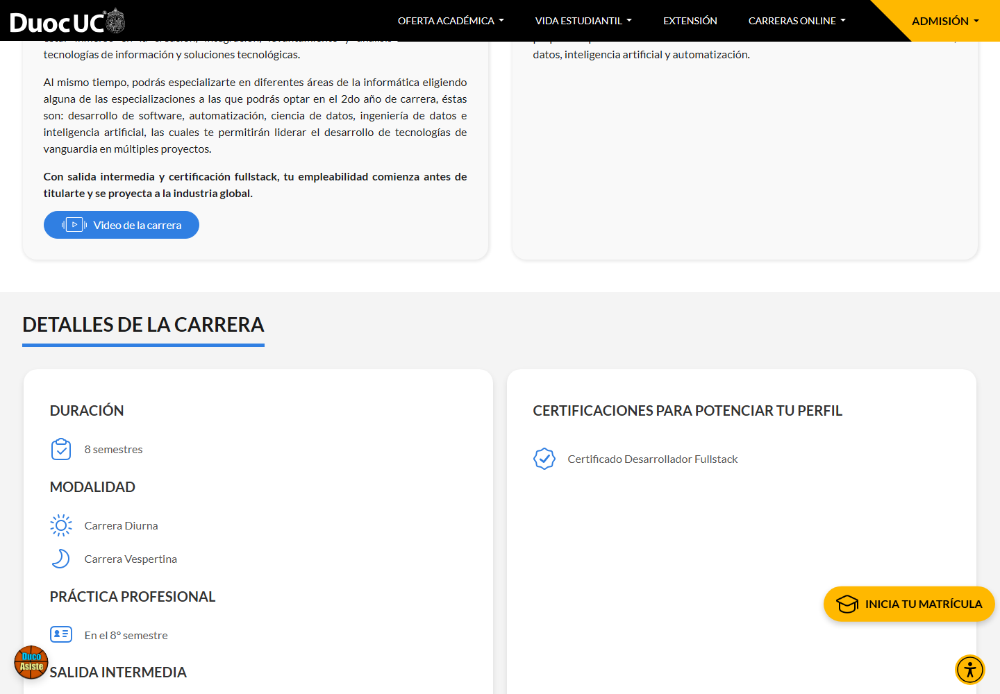
reproductor-cerrado | 2026-11-05T14:45:48.703Z | CU-13-03-reproductor-cerrado.pngCU-14: Aclarar una consulta ambigua
VERIFICADO
Metodo: Solicitudes por UI y servicio de IA real
2026-11-05T14:45:48.718Z - 2026-11-05T14:46:31.715Z | Registro original | Respuestas generativas registradas: 6
Solicitud: Abreme eso.
¿Qué página o elemento quieres que muestre?
Solicitud: Me refiero al menu Admision.
Te señalo el menú «Admisión».
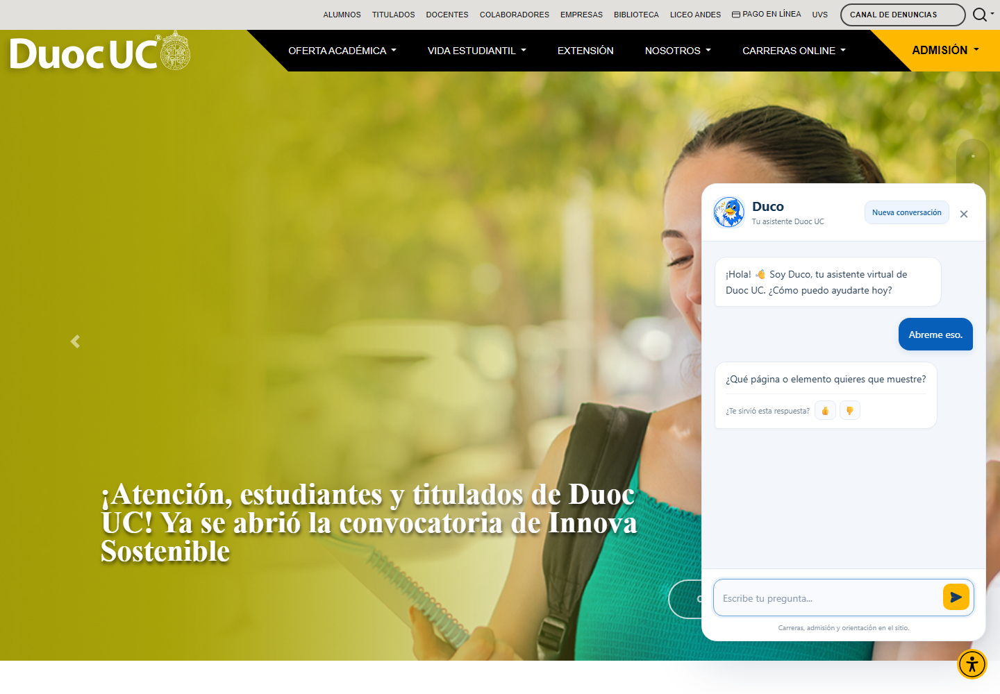
solicita-aclaracion | 2026-11-05T14:46:02.891Z | CU-14-01-solicita-aclaracion.pngaclaracion-procesada | 2026-11-05T14:46:31.714Z | CU-14-02-aclaracion-procesada.pngCU-15: Corregir una interpretacion o accion de Duco
FALLO
Metodo: Precondicion controlada con titulo resaltado; correccion por UI con IA real
2026-11-05T14:46:31.719Z - 2026-11-05T14:46:37.429Z | Registro original | Respuestas generativas registradas: 0
Solicitud: No, te pedi el parrafo explicativo, no el titulo. Resalta el texto que usaste para explicar la carrera.
¿Qué carrera quieres que explique y vaya resaltando? Indícame su nombre completo.
Fallo conservado
AssertionError [ERR_ASSERTION]: The expression evaluated to a falsy value:
assert(await page.locator('main p .duco-page-highlight, main li .duco-page-highlight').count())
at C:\Users\elias\OneDrive\Escritorio\Proyecto capstone\tests\use-case-evidence.cjs:207:7
at async check (C:\Users\elias\OneDrive\Escritorio\Proyecto capstone\tests\use-case-evidence.cjs:76:5)
at async C:\Users\elias\OneDrive\Escritorio\Proyecto capstone\tests\use-case-evidence.cjs:202:5CU-16: Continuar una conversacion durante la navegacion
VERIFICADO
Metodo: UI real, Session Storage, navegacion y recarga; sin llamada generativa necesaria
2026-11-05T14:46:37.435Z - 2026-11-05T14:46:45.022Z | Registro original | Respuestas generativas registradas: 0
Solicitud: hola duco
¡Hola! ¿En qué puedo ayudarte?
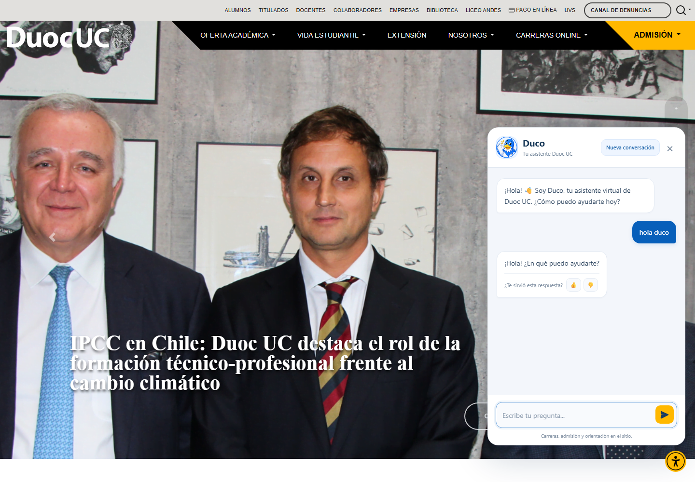
antes-de-navegar | 2026-11-05T14:46:41.030Z | CU-16-01-antes-de-navegar.png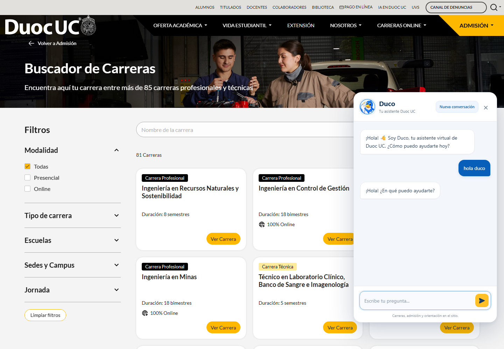
historial-en-catalogo | 2026-11-05T14:46:43.301Z | CU-16-02-historial-en-catalogo.png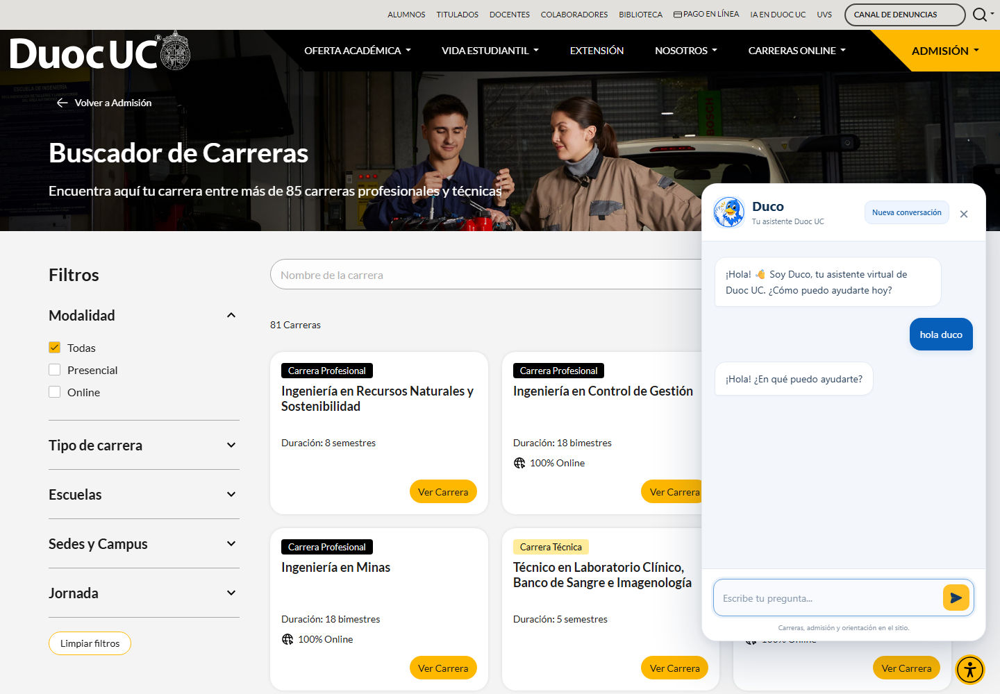
historial-tras-recarga | 2026-11-05T14:46:45.022Z | CU-16-03-historial-tras-recarga.pngCU-17: Repetir una guia o un resaltado anterior
VERIFICADO
Metodo: Boton real de repeticion, generado desde accion del motor
2026-11-05T14:46:45.026Z - 2026-11-05T14:46:49.895Z | Registro original | Respuestas generativas registradas: 0
Se conecta el boton real a una accion conocida para aislar la repeticion; no se prueba el clasificador de lenguaje en este caso.
primer-resaltado | 2026-11-05T14:46:48.025Z | CU-17-01-primer-resaltado.pngsin-resaltado | 2026-11-05T14:46:48.709Z | CU-17-02-sin-resaltado.png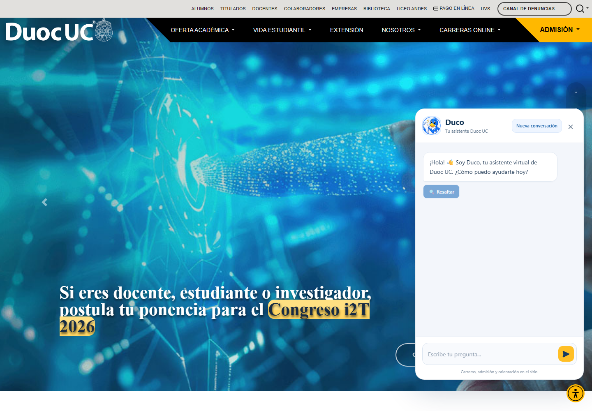
repetido-por-boton | 2026-11-05T14:46:49.895Z | CU-17-03-repetido-por-boton.pngCU-18: Iniciar una nueva conversacion
VERIFICADO
Metodo: Boton real y almacenamiento de sesion
2026-11-05T14:46:49.901Z - 2026-11-05T14:46:54.355Z | Registro original | Respuestas generativas registradas: 0
Solicitud: hola duco
¡Hola! ¿En qué puedo ayudarte?
 conversacion-previa | 2026-11-05T14:46:53.574Z | CU-18-01-conversacion-previa.pngnueva-conversacion | 2026-11-05T14:46:54.355Z | CU-18-02-nueva-conversacion.png
conversacion-previa | 2026-11-05T14:46:53.574Z | CU-18-01-conversacion-previa.pngnueva-conversacion | 2026-11-05T14:46:54.355Z | CU-18-02-nueva-conversacion.pngCU-19: Valorar una respuesta o una guia
VERIFICADO
Metodo: Boton negativo real, persistencia Oracle independiente
2026-11-05T14:46:54.359Z - 2026-11-05T14:46:59.408Z | Registro original | Respuestas generativas registradas: 0
Solicitud: hola duco
¡Hola! ¿En qué puedo ayudarte?
controles-de-valoracion | 2026-11-05T14:46:57.939Z | CU-19-01-controles-de-valoracion.pngvaloracion-guardada | 2026-11-05T14:46:59.407Z | CU-19-02-valoracion-guardada.pngCU-20: Proponer informacion para revision
VERIFICADO
Metodo: Motor proposeKnowledge y API Oracle reales; no interpretacion de solicitud
2026-11-05T14:46:59.412Z - 2026-11-05T14:47:03.375Z | Registro original | Respuestas generativas registradas: 0
antes | 2026-11-05T14:47:02.156Z | CU-20-01-antes.png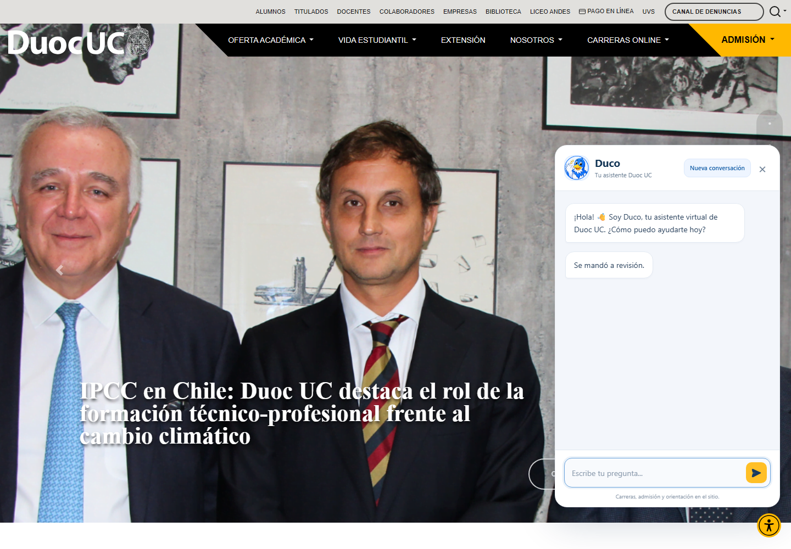
propuesta-enviada | 2026-11-05T14:47:03.375Z | CU-20-02-propuesta-enviada.pngCU-21: Consultar propuestas de conocimiento pendientes
VERIFICADO
Metodo: UI administrativa y Oracle reales; solo datos sinteticos creados para prueba
2026-11-05T14:47:03.378Z - 2026-11-05T14:47:04.376Z | Registro original | Respuestas generativas registradas: 0
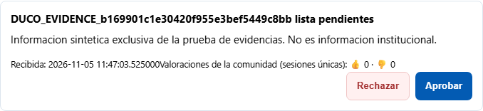
propuesta-pendiente | 2026-11-05T14:47:04.374Z | CU-21-01-propuesta-pendiente.pngCU-22: Aprobar una propuesta de conocimiento
VERIFICADO
Metodo: UI real; commit y publicacion verificados por conexion Oracle independiente
2026-11-05T14:47:04.379Z - 2026-11-05T14:47:06.989Z | Registro original | Respuestas generativas registradas: 0
pendiente-aprobacion | 2026-11-05T14:47:05.190Z | CU-22-01-pendiente-aprobacion.png aprobacion-confirmada | 2026-11-05T14:47:05.854Z | CU-22-02-aprobacion-confirmada.pngfaq-publicada | 2026-11-05T14:47:06.989Z | CU-22-03-faq-publicada.png
aprobacion-confirmada | 2026-11-05T14:47:05.854Z | CU-22-02-aprobacion-confirmada.pngfaq-publicada | 2026-11-05T14:47:06.989Z | CU-22-03-faq-publicada.pngCU-23: Rechazar una propuesta de conocimiento
VERIFICADO
Metodo: UI real; rechazo y ausencia de FAQ verificados en Oracle
2026-11-05T14:47:06.992Z - 2026-11-05T14:47:08.813Z | Registro original | Respuestas generativas registradas: 0
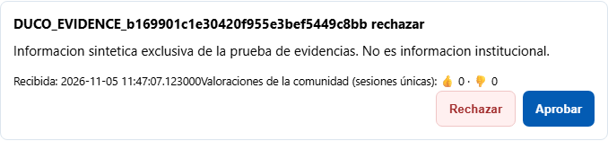
pendiente-rechazo | 2026-11-05T14:47:07.824Z | CU-23-01-pendiente-rechazo.pngrechazo-confirmado | 2026-11-05T14:47:08.453Z | CU-23-02-rechazo-confirmado.pngCU-24: Revisar valoraciones negativas
VERIFICADO
Metodo: UI real sobre voto registrado en CU-19 y verificacion Oracle
2026-11-05T14:47:08.816Z - 2026-11-05T14:47:10.993Z | Registro original | Respuestas generativas registradas: 0
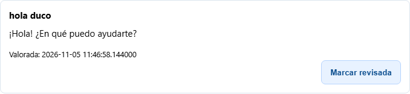
valoracion-pendiente | 2026-11-05T14:47:09.973Z | CU-24-01-valoracion-pendiente.pngrevisada | 2026-11-05T14:47:10.611Z | CU-24-02-revisada.pngCU-25: Consultar tablas y registros administrables
VERIFICADO
Metodo: Selector y listado de tabla Oracle por UI real
2026-11-05T14:47:10.997Z - 2026-11-05T14:47:11.776Z | Registro original | Respuestas generativas registradas: 0
ACCIONES_NAVEGACION, AUDITORIA_CAMBIOS, CATEGORIAS_FAQ, CONFIGURACIONES, DETECCIONES_INTENCION, EJECUCIONES_NAVEGACION, ENLACES_SECCION, ETIQUETAS, EVENTOS_SISTEMA, EXPERIENCIAS_ACCION, FAQ_FUENTES, FUENTES_INFORMACION, FUENTES_RESPUESTA, GENERACIONES_IA, INTENCIONES, MENSAJES, METRICAS_RENDIMIENTO, MODELOS_IA, PAGINAS_WEB, PREGUNTAS_FRECUENTES, PROPUESTAS_CONOCIMIENTO, REGISTROS_ERROR, ROLES, SECCIONES_WEB, SECCION_ETIQUETA, SESIONES_ADMIN, SESIONES_CHAT, SINONIMOS_CONSULTA, TIPOS_ERROR, USUARIOS_ADMIN, VALORACIONES_RESPUESTA, VERSIONES_PROMPT
listado-configuraciones | 2026-11-05T14:47:11.773Z | CU-25-01-listado-configuraciones.pngCU-26: Crear un registro administrativo
VERIFICADO
Metodo: Formulario real y commit Oracle independiente
2026-11-05T14:47:11.779Z - 2026-11-05T14:47:13.817Z | Registro original | Respuestas generativas registradas: 0
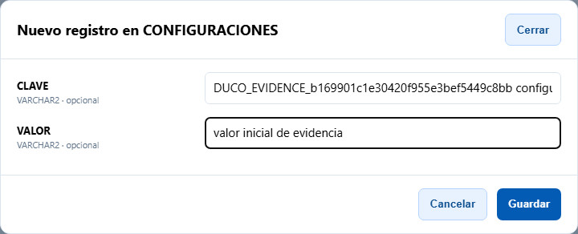
formulario-alta | 2026-11-05T14:47:12.642Z | CU-26-01-formulario-alta.pngregistro-creado | 2026-11-05T14:47:13.454Z | CU-26-02-registro-creado.pngCU-27: Modificar un registro administrativo
VERIFICADO
Metodo: Formulario real y commit Oracle independiente; registro de CU-26
2026-11-05T14:47:13.820Z - 2026-11-05T14:47:16.271Z | Registro original | Respuestas generativas registradas: 0
 valor-anterior | 2026-11-05T14:47:14.572Z | CU-27-01-valor-anterior.png
valor-anterior | 2026-11-05T14:47:14.572Z | CU-27-01-valor-anterior.png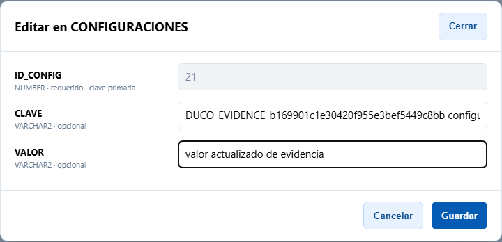
formulario-edicion | 2026-11-05T14:47:15.158Z | CU-27-02-formulario-edicion.pngregistro-actualizado | 2026-11-05T14:47:15.921Z | CU-27-03-registro-actualizado.pngCU-28: Eliminar un registro administrativo
VERIFICADO
Metodo: Boton y confirmacion reales; ausencia verificada en Oracle
2026-11-05T14:47:16.274Z - 2026-11-05T14:47:18.201Z | Registro original | Respuestas generativas registradas: 0
Confirmacion real: ¿Eliminar este registro? Si otras tablas lo referencian, Oracle impedirá borrarlo.
 antes-eliminar | 2026-11-05T14:47:17.038Z | CU-28-01-antes-eliminar.png
antes-eliminar | 2026-11-05T14:47:17.038Z | CU-28-01-antes-eliminar.png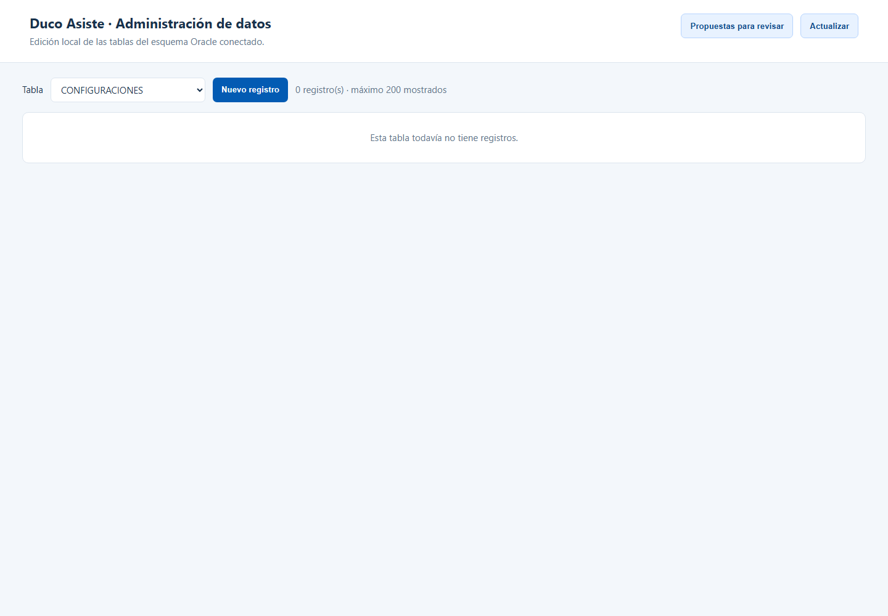
listado-sin-registro | 2026-11-05T14:47:17.848Z | CU-28-02-listado-sin-registro.pngCU-29: Reintentar una consulta tras un fallo del servicio de IA
VERIFICADO
Metodo: Fallo de IA simulado, recuperacion posterior con Ollama real por UI
2026-11-05T14:47:18.204Z - 2026-11-05T14:47:30.490Z | Registro original | Respuestas generativas registradas: 2
Solicitud: Que es Duoc UC? Solo explicamelo, no navegues.
No pude conectarme con Ollama. Verifica que esté iniciado e intenta nuevamente.
Solicitud: Que es Duoc UC? Solo explicamelo, no navegues.
Duoc UC es una institución de educación superior chilena dedicada a formar especialistas capaces de adaptarse al mundo laboral actual. Ofrece programas técnicos y profesionales diseñados para responder a las necesidades del mercado, con un enfoque práctico y flexible que permite estudiar en horarios vespertinos o los fines de semana, ideal para quienes trabajan durante el día.
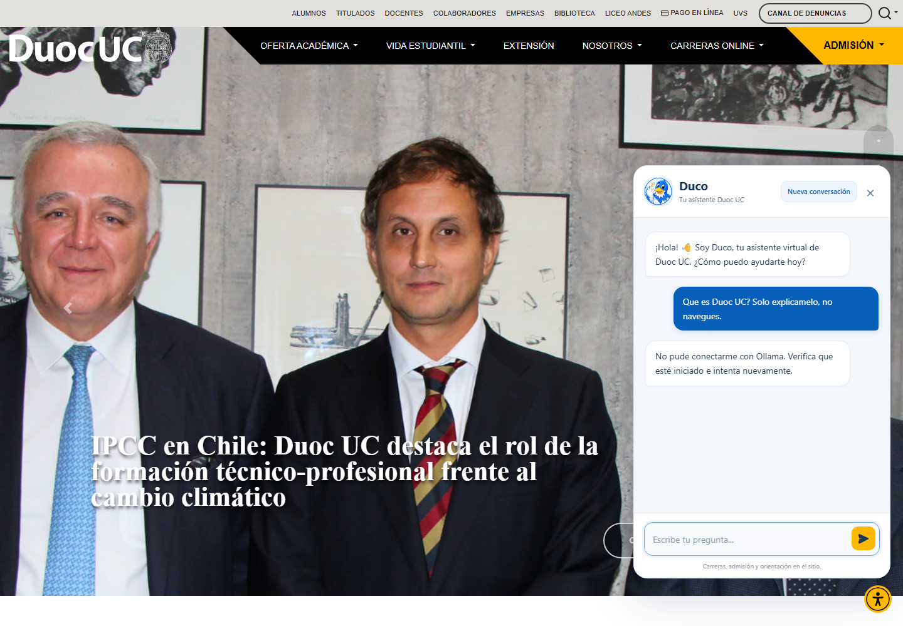
fallo-controlado | 2026-11-05T14:47:21.808Z | CU-29-01-fallo-controlado.png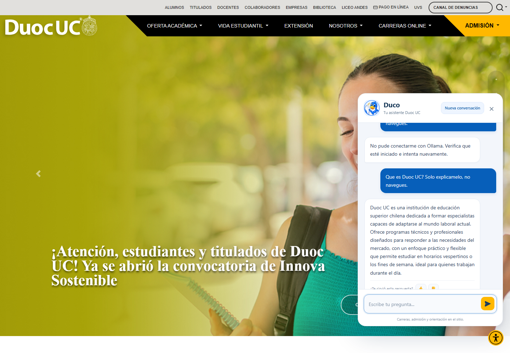
reintento-exitoso | 2026-11-05T14:47:30.490Z | CU-29-02-reintento-exitoso.pngCU-30: Solicitar una carrera alternativa
FALLO
Metodo: Solicitud por UI con contexto de ficha real
2026-11-05T14:47:30.494Z - 2026-11-05T14:49:34.488Z | Registro original | Respuestas generativas registradas: 2
Solicitud: me muestras otra carrera cualquiera?
Fallo conservado
page.waitForURL: Timeout 120000ms exceeded.
=========================== logs ===========================
waiting for navigation to "**/carreras.html" until "load"
============================================================
at C:\Users\elias\OneDrive\Escritorio\Proyecto capstone\tests\use-case-evidence.cjs:292:18
at async check (C:\Users\elias\OneDrive\Escritorio\Proyecto capstone\tests\use-case-evidence.cjs:76:5)
at async C:\Users\elias\OneDrive\Escritorio\Proyecto capstone\tests\use-case-evidence.cjs:289:5CU-31: Consultar la ubicacion actual y la peticion anterior
VERIFICADO
Metodo: Consulta por UI tras navegacion manual; lectura de contexto real
2026-11-05T14:49:34.494Z - 2026-11-05T14:49:42.548Z | Registro original | Respuestas generativas registradas: 0
Solicitud: hola duco
¡Hola! ¿En qué puedo ayudarte?
Solicitud: En que pagina estoy ahora?
Estás en el catálogo general de carreras.
Solicitud: Cual fue mi pregunta anterior?
Antes me pediste: «En que pagina estoy ahora?».
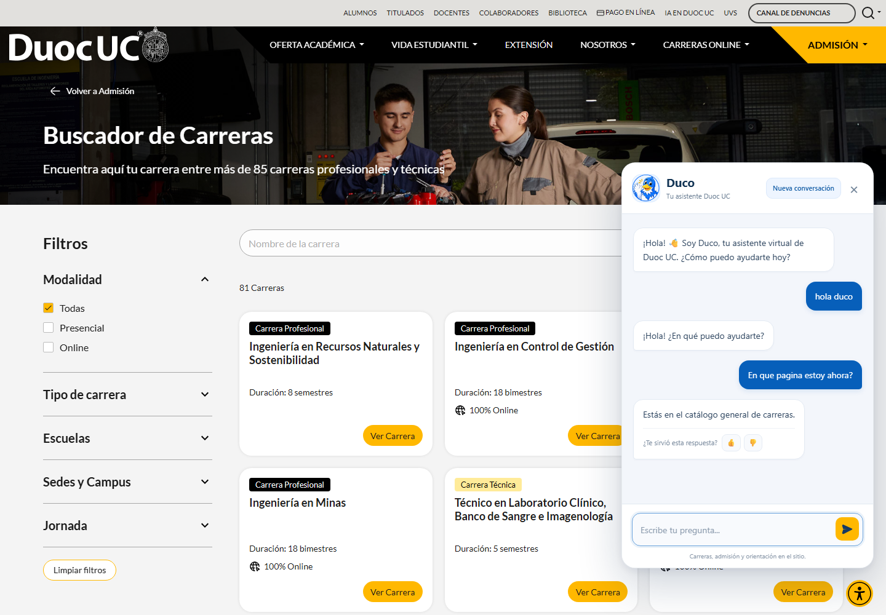
ubicacion-actual | 2026-11-05T14:49:40.765Z | CU-31-01-ubicacion-actual.png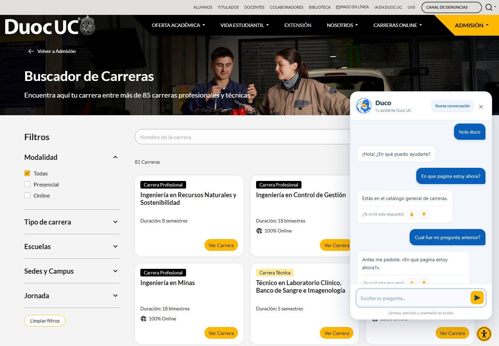
peticion-anterior | 2026-11-05T14:49:42.548Z | CU-31-02-peticion-anterior.png